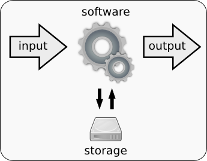
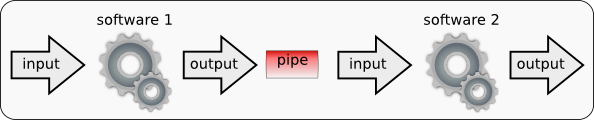

Command line primer¶
The command line interface could seem a little scary for a first time user, but it is just a different way of interacting with the computer software. If you don’t have any previous command line experience don’t worry, it won’t be difficult.
We can tell a computer what to do by using the mouse and pointing and clicking at buttons and menus or we just can write down the order. For instance if we want to get a list of the files in a folder we can can open a folder browser and click our way to the folder or we can just write:
$ ls folder_name
file_1.txt
file_2.txt
None of these two ways of communicating with the computer is better. Some tasks are more easy to do with the mouse and some others writing with the keyboard, although some say that real men use the command line.
Into the real¶
To use the command line launch a terminal (Applications -> Accessories -> Terminal). You will see something like:
user@computer:~/dir $ _
This is called prompt because it prompts you to do something, the computer is waiting for your command. The prompt ends with a $ symbol (in other computers it might be a %, or #). After that symbol a blinking square marks the place where the writing will occur. The prompt in the system used shows the name of the user and the computer and the directory in which we are located (working directory).
We can write any command into this prompt and wait for the result. For instance we can tell the computer to list the files. Just write “ls” and press the enter key:
user_name $ ls
some_file.txt
another_file.txt
The ls command is in fact a fully fledged program. When we run a command we are executing a program that returns an output (in this case in the form of a text output) and it some cases it might also take an input. When we use the command line we run a command (call a program), we wait for the program to finish and we run another program.
Usually the commands modify its behaviour by using parameters. For instance we can tell ls to use the long format to print the file by writing:
$ ls -l
Every command has a collection of parameters and options. The standard way to ask for help about them is to use the option ‘–help’ or ‘-h’:
$ ls --help
Modo de empleo: ls [OPCIÓN]... [FICHERO]...
List information about the FILEs (the current directory by default).
Sort entries alphabetically if none of -cftuvSUX nor --sort.
We can also read the documentation for a program by running the man command. This will launch the man program, man is an interactive program, it will let you go up and down and look for words. man is not like ls, ls took a time to run (usually very little time) and then will finish, man won’t finish unless we order it. To finish man and recover the prompt just press ‘q’:
$ man ls
(to finish press q)
Conventions used¶
In this course all the commands that should be typed are showed with the complete prompt and the result that should be expected:
user@computer:~/directory$ command_to_execute
result
If we are copying the command we only have to copy the words after the dollar sign. In this example we would copy “command_to_execute”. The lines with no dollar sign show the expected result and are included only to be compared with the actual result obtained after executing the command.
File system¶
The files in the computer are organized in folders and those folders are sorted in an hierarchical structure. When the program that we are executing requires a file or a folder as input we have to give this program the path to this input. We could do:
$ ls my_documents/
This time the ls command would list the contents in my_documents. But what is ls listing when we invoke it without any parameter? There is a default directory that the ls command takes. This directory is called the working directory and it is an important concept in a command line session. We are always inside a directory and this directory is called working directory. We can print this directory with the command pwd (Print Working Directory):
$ pwd
/home/jose
We can change this directory by using the command cd (Change Directory):
$ pwd
/home/jose
$ ls
dir_1
file_1.txt
$ ls dir_1
file_2.txt
$ cd dir_1
$ ls
file_2.txt
If you want your life to be easier do not use spaces or non-english alphanumerical characters in the file name. They can be used, but some programs might have problems with them.
Directories¶
In a Unix system like Linux or MacOS X the directory paths use forward slashes “/”. / is the root directory and /home/ is a subdirectory of /.
Every user has a “home” directory. In this directory the user can write and delete files and directories. In a Linux system this directory is usually /home/user_name/.
In a Unix system all directories are subdirectories from / (the root). When a path starts with / is said to be “absolute”. A path like “/home/user/Documents” is absolute. If we’re working in the directory /home/user we could refer to the same Documents directory just by typing “Documents”, this is a relative path.
There is also a widely used way to refer to a directory “..”. These two dots mean that we are pointing to the one directory up in the hierarchy. For instance, if we’re working in the directory /home/user/docs/, “..” would refer to /home/user.
Moving around the file system:
pwd print working directory, or current directory.
cd my_docs Change current directory to the subdirectory my_docs.
cd Change current directory to your HOME directory.
cd .. Change current directory to the parent directory of the current directory.
cd ~ Change to the user's home directory.
cd - Change to the previous visited directory.
Listing directory contents:
ls list a directory
ls -l list a directory in long ( detailed ) format
Moving, renaming, and copying files¶
Files are copied with the cp (CoPy) command and moved with the mv (MoVe) one. To create a new directory we would use the mkdir (MaKe Directory) command.
cp file1 file2 copy the file1 to file2
mv file1 newname move or rename a file
mv file1 AAA/ move file1 into sub-directory AAA
rm file1 remove (delete) a file
rm -r dir1 recursively remove a directory and its contents
mkdir dir1 create a directory
Viewing and editing files¶
The Unix systems have a powerful set of text tools. We can print, browse, filter, sort, and cut text files easily. It is highly recommended to learn to use this commands if we have to deal with long text files.
cat filename Dump a file to the screen.
less filename Browse through a file: q=quit, / search.
head filename Show the first lines of a file.
head -n filename Show the first n lines of a file.
tail filename Show the last few lines of a file.
tail -n filename Show the last n lines of a file.
grep string filename prints all the lines in a file that contain the string
cut filename cut some columns
nano filename Edit the file with an interactive text editor
vi filename Edit the file with a very powerful interactive text editor
(Don't run this command unless you already know how to stop vi)
Standard output¶
For an Unix computer the command line screen is just a file, printing a letter in the screen is just like writing a letter in a file. So everything that it is printed to the screen can be redirected to be written in a file. We could dump the contents of a couple of files to the screen with the command:
$ cat file1.txt file2.txt
If we want to concatenate these two files and keep the result in a new one we would do:
$ cat file1.txt file2.txt > new_file.txt
This same trick would work for anything to be printed to the screen. We could store a list of files in a new file by running the command:
$ ls > my_list.txt
Interactive History¶
In the prompt we can use the arrow keys to access our previous commands, edit them and re-execute them. We can also look for old command just by pressing Ctrl and the letter r.
Stopping a program¶
In most cases we can stop a program just by pressing Ctrl + c. For a more fine grained control of the processes (running programs) take a look at the ps and kill commands.
To print a list of all running processes you can use ps -ef:
ngs_user@machine:~$ ps -ef
UID PID PPID C STIME TTY TIME CMD
root 1 0 0 10:47 ? 00:00:01 /sbin/init
root 2 0 0 10:47 ? 00:00:00 [kthreadd]
root 3 2 0 10:47 ? 00:00:00 [ksoftirqd/0]
root 4 2 0 10:47 ? 00:00:00 [kworker/0:0]
root 1749 1 2 10:48 ? 00:00:02 /usr/bin/python /usr/sbin/aptd
ngs_user 1760 1165 0 10:49 ? 00:00:00 /usr/lib/deja-dup/deja-dup/deja-
ngs_user 1777 1577 8 10:50 pts/2 00:00:00 bash
ngs_user 1831 1777 0 10:50 pts/2 00:00:00 ps -ef
The most noteworthy columns are:
UID, the user running the process.
PID, an integer that identifies the process.
CMD, the command that spawned the process.
To stop a process we can send an abort (ABRT - 6) or a kill (9) signal to it. To send a signal we use the kill command with the signal number and the process PID:
ngs_user@machine:~$ kill -6 1848
A process can choose to ignore an abort signal (6), but it will stop immediately when a kill signal is received.
Pipes¶
A command line software takes some inputs, processes them and finally generates some outputs. The input and outputs can be files stored in the hard drive or alternatively can be linked to the terminal. For instance, some outputs are generally printed in the terminal (standard output and errors).
{kind=link}
We can use the ls program as an example. When we execute this program we obtain a list of files and directories printed in the terminal (standard output). This program generates a flow of information that ends up in the terminal. We could redirect this flow of information to a file, in this way, we could store it:
~$ ls > list.txt
~$ ls
list.txt
To redirect the flow of information from the terminal to a file we just use the symbol > followed by the name of a file. Once we do it a new file with this name will be created and the data that were to be written in the terminal will be written in this file instead. If a previous file with the same name existed it would be deleted. We could also append the new information to the end of a previously existing file by using >>*.
We can inspect the content of the newly created file using the cat command:
~$ cat list.txt
datos_1.txt
datos_2.txt
We have redirected the standard output to a file. In fact not everything that the terminal shows is standard output. Another independent flow of information is commonly used by the programs to show errors and warnings, the standard error. The redirections for the for both standard output and error are independent.
In Unix we can redirect the output flow of information created by any software to the input of a second software by using a pipe. The symbol used for pipes is |.
{kind=link}
Let’s run an example with the commands wc (Word Count) and cat. Let’s count first how many lines, words and characters are in the list that we have just created:
~$ wc list.txt
7 7 80 listado.txt
We could do just the same in one step by using pipes:
~$ ls | wc
7 7 80
In this case the output generated by ls has been redirected to the input of wc. This technique is one of the advantages of the Unix systems over other Operating Systems. We can chain little commands to create complex pipelines very easily. For instance we could chain a software that removes adaptor sequences and another that trims bad quality regions to create a small read cleaning pipeline.
Practical tasks: Unix introduction¶
Open a terminal and print the working direcroty.
ngs_user@machine:~$ pwd
/home/ngs_user
Which are the files in that directory?
ngs_user@machine:~$ ls
course_files Desktop software tmp
Which are the files and directories present at the root directory?
ngs_user@machine:~$ ls /
bin cdrom etc lib media opt root sbin srv tmp var
boot dev home mnt proc run selinux sys usr vmlinuz
Or alternatively:
ngs_user@machine:~$ cd /
ngs_user@machine:/$ ls
bin cdrom etc lib media opt root sbin srv tmp var
boot dev home mnt proc run selinux sys usr vmlinuz
In this second method we have changed our working directory.
ngs_user@machine:/$ pwd
/
We can go to our HOME directory using cd:
ngs_user@machine:~$ pwd
/home/ngs_user
Which are the file sizes (and permissions) for the files in the root directory?
ngs_user@machine:~$ ls -l /
total 88
drwxr-xr-x 2 root root 4096 Apr 2 10:21 bin
drwxr-xr-x 3 root root 4096 Apr 2 10:42 boot
The sizes are in bytes, to get more intuitive units we can use the h (human) option:
ngs_user@machine:~$ ls -lh /
total 88K
drwxr-xr-x 2 root root 4.0K Apr 2 10:21 bin
drwxr-xr-x 3 root root 4.0K Apr 2 10:42 boot
Why most of the directories occupy exactly 4K? Is this the size taken by the files in the directory? No, it is not. To get the size take by all the files and subdirectories in a given directory we can use the du (disk usage) command.
Which are all the files and directories located at our HOME directory?
ngs_user@machine:~$ cd
ngs_user@machine:~$ ls -a
. .dmrc .goutputstream-THAVLW .mission-control tmp
Or alternatively:
ngs_user@machine:~$ ls -a ~
. .dmrc .goutputstream-THAVLW .mission-control tmp
Create a directory named experiment.
ngs_user@machine:~$ mkdir experiment
Create using the touch command the files data1.txt and data2.txt in the experiment directory.
ngs_user@machine:~$ touch experiment/data1.txt
ngs_user@machine:~$ touch experiment/data2.txt
ngs_user@machine:~$ ls experiment/
data1.txt data2.txt
Or alternatively:
ngs_user@machine:~$ cd experiment/
ngs_user@machine:~/experiment$ touch data1.txt
ngs_user@machine:~/experiment$ touch data2.txt
ngs_user@machine:~/experiment$ ls
data1.txt data2.txt
Go to your HOME directory and from there list the files in the experiment directory.
ngs_user@machine:~/experiment$ cd
ngs_user@machine:~$ ls experiment/
data1.txt data2.txt
Remove all files in the experiment directory with that include 2 in their name.
ngs_user@machine:~$ rm experiment/*2*
Or alternatively:
ngs_user@machine:~$ cd experiment/
ngs_user@machine:~/experiment$ rm *2*
Copy the experiment directory to a new directory named backup_experiment.
ngs_user@machine:~/experiment$ cd
ngs_user@machine:~$ cp -r experiment/ backup_experiment
Remove the experiment directory.
ngs_user@machine:~$ rm -r experiment/
Rename the backup_experiment directory as experiment.
ngs_user@machine:~$ mv backup_experiment/ experiment
Which was the last file modified in the /etc directory?
ngs_user@machine:~$ ls -ltr /etc/
Repeat the last exercise, but list only the last five results.
ngs_user@machine:~$ ls -ltr /etc/ | tail -n 5
drwxr-xr-x 3 root root 4096 Apr 3 10:42 emboss
drwxr-xr-x 3 root root 4096 Apr 3 10:42 mysql
-rw-r--r-- 1 root root 75882 Apr 3 11:07 ld.so.cache
-rw-r--r-- 1 root root 604 Apr 4 10:52 mtab
drwxr-xr-x 4 root lp 4096 Apr 4 11:16 cups
How many files and directories are in the /etc directory?
ngs_user@machine:~$ ls /etc/ | wc
234 234 2250
Store the names of the files and directories located in the /etc directory in a file named etc.list.
ngs_user@machine:~$ ls /etc/ > etc.list
ngs_user@machine:~$ less etc.list
Try to remove the /etc directory.
ngs_user@machine:~$ rm -rf /etc/
rm: cannot remove `/etc/rsyslog.conf': Permission denied
rm: cannot remove `/etc/resolv.conf': Permission denied